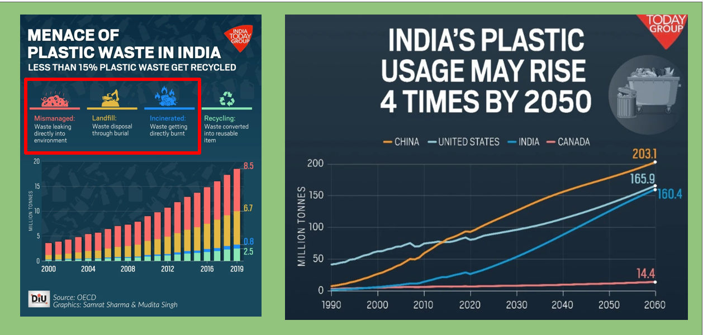
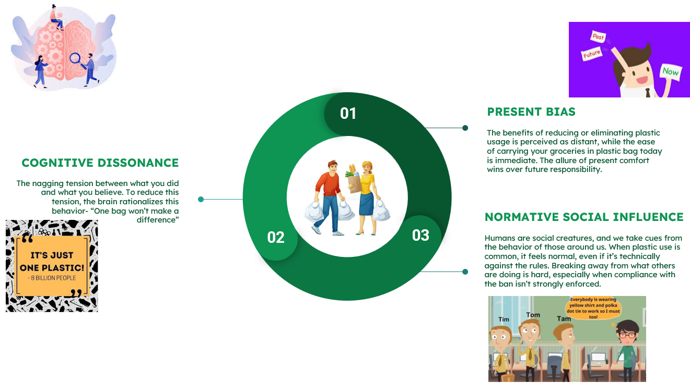

India has a plastic problem. In 2021, the average Indian used somewhere between 750 and 2143 plastic bags a year. Compare that to France, where people use just 77 bags per person. That’s not a gap, that’s a canyon. And if the OECD is right, India’s plastic use could quadruple by 2050 — reaching around 160 million tons by 2060. Basically, enough plastic to wrap the planet like cling film.
So, in 2022, the Indian government introduced a nationwide ban on single-use plastic. With penalties of up to €1000 (yes, a thousand) and even possible jail time. Sounds strict enough to scare people straight, right?
Well… not really.
Why the Ban Failed
Because humans are talented at ignoring rules when they’re inconvenient. The ban stumbled on three fronts:
- No cheap alternatives. Plastic is dirt cheap; eco-friendly options weren’t.
- No motivation. The “why should I care today?” problem.
- Enforcement? Forget it. Policing a billion people’s grocery bags is… ambitious.
The result? Plastic smuggling. Yes, actual smuggling of plastic bags. Police officers were inspecting kirana shops like they were raiding a drug cartel — except the contraband was shopping bags that cost a few rupees. The seriousness of the effort was real; the absurdity of the situation was too.
Bans and Human Nature
India isn’t alone. Humans have a long, messy history with bans:
- Prohibition (US, 1920s): Alcohol was banned. People drank more.
- Delhi’s firecracker ban: Logic said “less pollution.” Reality said “worst AQI yet.”
- Kenya’s plastic ban (2016): Same outcome — smuggling, continued usage.
The pattern is clear: bans make people creative, not compliant.
Why We Break Bans?
We dug into behavioral science to explain this rebellion, and found three psychological culprits:
In simpler terms
- Present Bias: The bag makes my life easier today. The environmental cost shows up decades later. Guess which one wins.
- Cognitive Dissonance: “I know plastic is bad, but my one bag won’t matter. Anyway, the corporations should fix this, not me.”
- Normative Social Influence: If everyone else at the shop is taking plastic bags, do you really want to be the lone warrior saying no?
Our Big Idea: The Green Card
Instead of punishing people, what if we rewarded them? Introducing Green Card.
- Say no to plastic, scan your Green Card.
- Earn points.
- Use points to boost your credit score.
In a country where loans power almost everything — education, homes, cars — linking eco-friendly choices to creditworthiness could actually change behavior. Suddenly, skipping a plastic bag isn’t about “saving the planet someday,” it’s about “getting your home loan approved today.”
And technically, it’s feasible. India’s UPI scan-and-pay system already tracks billions of micro-transactions. Adding a loyalty-style card on top? Not exactly rocket science.
Other Nudges
We also suggested smaller, psychology-backed nudges:
- Posters at checkout: “Only 1% of shoppers ask for plastic. Be the 99%.”
- Opt-in bags: No more free handouts; you have to ask (and pay).
- Plastic returns: Bring bags back, earn discounts or points.
Did It Happen?

Not yet. But we pitched it to Eric Singler (Founder, BVA Nudge Consulting), and he loved it:
“While everyone is pitching an app to track behavior, it’s impressive to see the old school behavioral solution that makes you a better citizen.”
Encouraging words. But the real challenge is convincing banks and the government to link credit scores to bag usage. Bureaucracy moves slower than glaciers — and unfortunately, plastic doesn’t.
Final Thought
India’s plastic consumption is skyrocketing. A ban alone won’t solve it — history and psychology say so. But if avoiding plastic helps you get that home loan or tip your credit score in the right direction? That might just work.
Because honestly, nobody wants to live in a country topping the charts for 160 million tons of plastic waste.